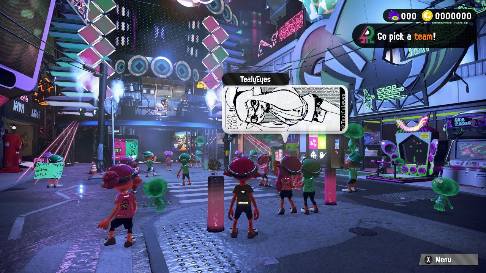
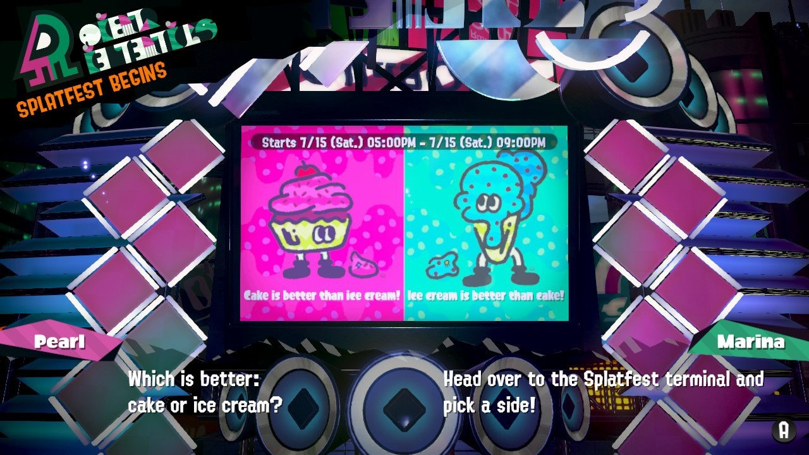
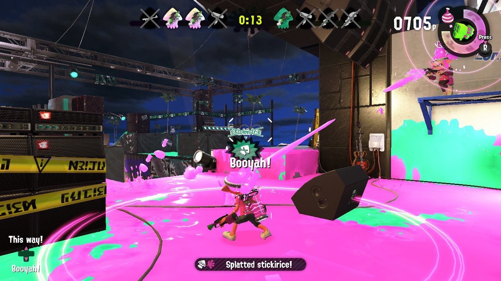
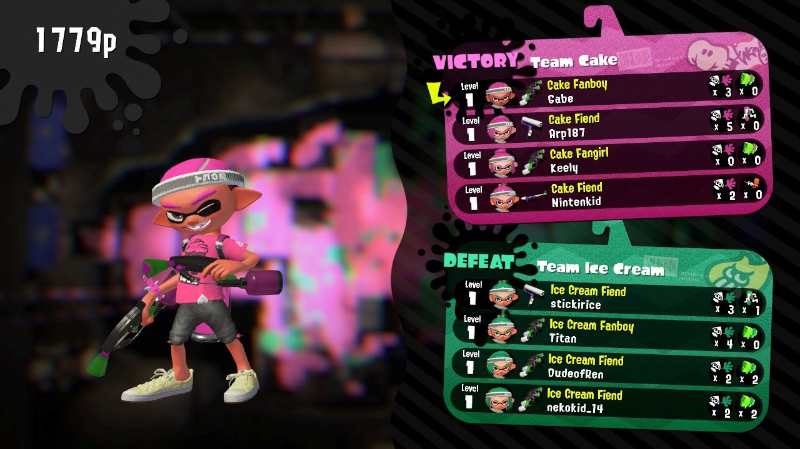

Hey what's going on guys, I got my hands on Splatoon 2 again and this time during the first Splatfest in the last 2 years. During the Splatfest, players would fight and see which dessert was better: #Icecream or #Cake.
Some might argue that the competition was a sabotage from the start as fans clammored for pop sensation, Marina, the Octoling that represents Team Ice Cream. Before the fest even started there was a poll to which she was highly favored and thus their team was stacked. I say their because I chose Cake so that I would be able to find matches quicker. It worked!
The demo featured for the first time, Inkopolis Square. It had a huge stage and had pictures that were drawn from real players all over the plaza and above their inklings.
You were forced to pick a team before you could do play online, however I really enjoyed getting a sneak peak of the merchants and the gear that will be offered during the full game.
I played for about 2 hours and although it was just turf war again, I enjoyed testing out most of the new weapons. My favorite was the Splat dualies which lets you dodge and shoot quickly.
I managed to only win 2 matches during the whole fest but I'm thinking is was due to the lopsidedness of the whole team choosing deal.
I can't wait for this game to hit stores and eShop this Friday July 21st, 2017. Stay tuned for my review next week as I will have the whole weekend to digest the whole game. For now, here's a look at The single player mode from Nintendo. Enjoy.